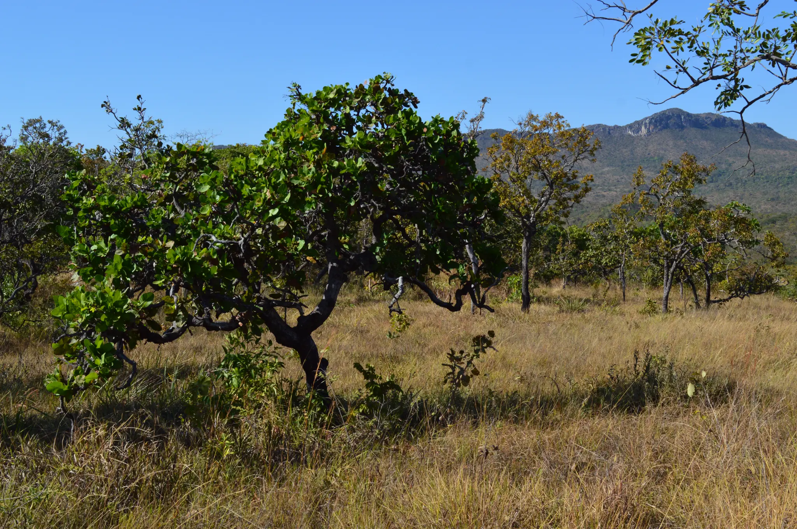

Este site não usa cookies de rastreamento nem de publicidade. O armazenamento do navegador serve apenas para lembrar esta escolha.
DAMNUM
Valoração de Danos Ambientais Decorrentes de Desmatamento Ilegal
v. 7.0

Parâmetros Utilizados
Levado à data do dano pelo IPCA-15 no momento do cálculo.
Não foi possível obter a cotação automaticamente. Verifique o valor acima.
Definida pela fitofisionomia escolhida; pode ser alterada.
Informe a taxa em percentual, entre 0 e 30 (ex.: 6 para 6% ao ano).
Valores de 2023, levados ao mês do dano pelo IPCA-15.
Em APP e reserva legal a cobrança vai até a recuperação (tempo acima). Na área passível de exploração vai até a regularização: juros do ano 1 × número de anos (Nota Técnica 03/2022, item 1.7). Em branco, usa o ano da regularização informado nos parâmetros do LIA ou, sem ele, o ano atual. Informe 0 para não cobrar.
Média do IPCA de 1995 a 2023. Custo de reposição: plantio total, R$ 41.649,33/ha (Timotheo et al., 2017).
Matéria não pacificada. A partir de set./2024 aplica-se a taxa legal nas duas opções.
Não foi possível obter as séries oficiais
O DAMNUM não calcula com série incompleta. Se quiser prosseguir, informe os fatores apurados em outra fonte (por exemplo, a Calculadora do Cidadão do Banco Central) e clique de novo em "Calcular Valoração".
Resultado da Valoração
Dano Material (área fora de APP e ARL)
Valor:
Nota: Se o dano é em área protegida (APP/ARL) e haverá reparação in situ, o dano material direto deve ser reparado in situ (e não cobrado monetariamente, sob pena de bis in idem). Nesse caso, a cobrança monetária refere-se ao dano interino.
Dano Interino (área em APP e ARL)
Valor:
Dano Residual
Valor:
Dano Extrapatrimonial (Mercado Voluntário de Carbono)
Dano Climático (Custo Social do Carbono)
Lucro do Ilícito Ambiental (LIA)
Total
Valor total:
Valor total atualizado (correção e juros de mora): ⓘ
Relatório de Valoração dos Danos Ambientais Decorrentes de Desmatamento Ilegal